Peplum Blouse
Contemporary Womenswear
Floral lace meets patterned fabric in this fitted peplum blouse. The defined waist and flared hem create a polished piece suitable for work, social occasions and coordinated separates.
 Joycenuwa
Joycenuwa
Fashion Archive
Selected Garments
This section brings together standalone garments created outside Joycenuwa’s named collections. Developed across different stages of the practice, the designs explore varied approaches to silhouette, textile, colour and construction.
From workwear and occasion dressing to separates and experimental tailoring, the garments reflect an evolving interest in confident, wearable womenswear shaped by proportion, craftsmanship and individual expression.
← Back to FashionFashion Archive
Standalone garments exploring ready-to-wear, occasion dressing and contemporary tailoring.
Contemporary Womenswear
Floral lace meets patterned fabric in this fitted peplum blouse. The defined waist and flared hem create a polished piece suitable for work, social occasions and coordinated separates.
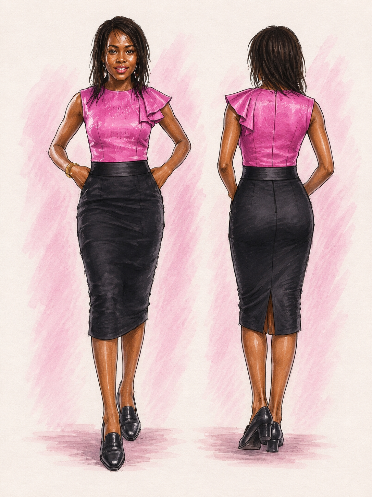
Ready-to-Wear
A pink fitted top with an asymmetric ruffle is paired with a high-waisted black pencil skirt. Contrasting colour and a sculptural shoulder detail bring character to a refined two-tone design.
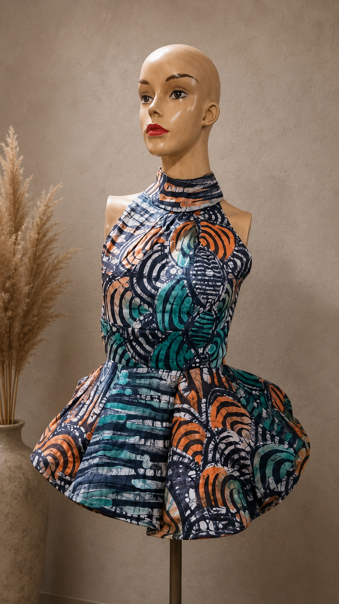
Statement Separates
This high-neck halter top uses bold print and generous circular volume to create a dramatic statement piece. The fitted bodice provides balance to the exaggerated peplum.
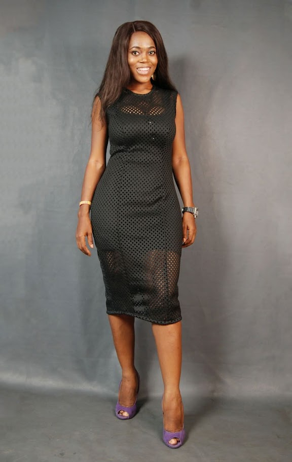
Occasionwear
A black midi dress constructed with perforated fabric and sheer sections. Its restrained shape allows transparency, texture and subtle layering to become the main features.
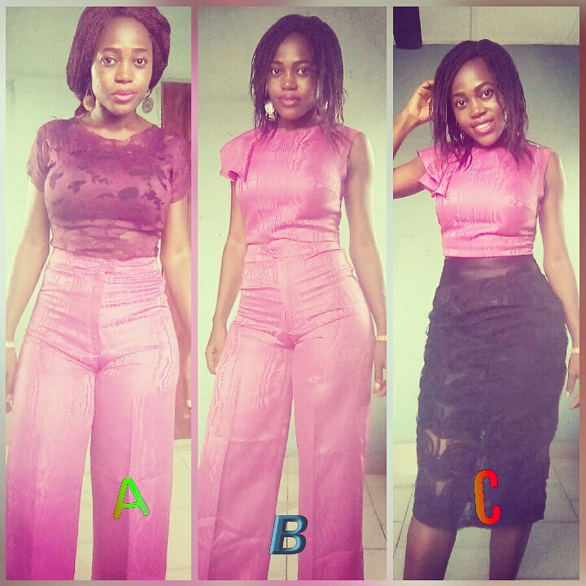
Ready-to-Wear
Coordinated pink separates demonstrate several styling possibilities. Wide-leg trousers can be paired with either a lace top or an asymmetric blouse, allowing the pieces to move between casual, professional and evening settings.
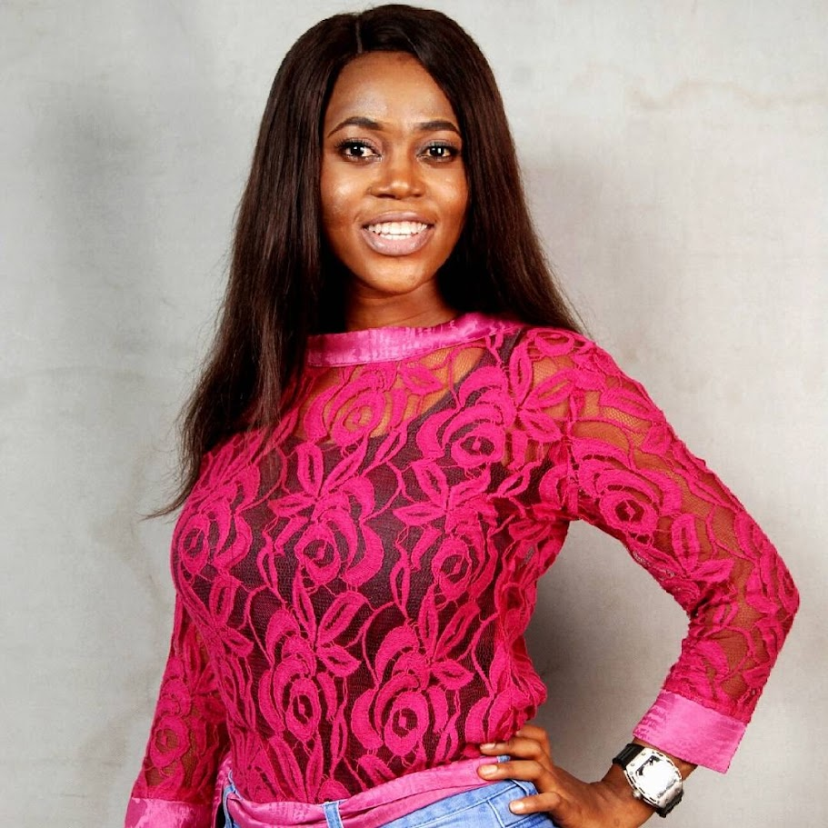
Separates
A fitted floral-lace top finished with satin bands at the neckline, waist and cuffs. It combines delicate transparency with clean finishing and can be styled as either daywear or occasionwear.
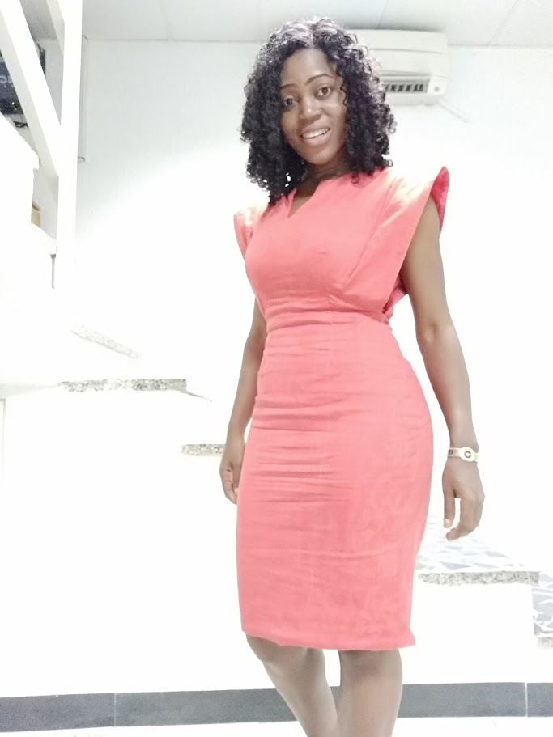
Contemporary Womenswear
This coral knee-length dress features angular cap sleeves, a fitted waist and clean seam construction. Minimal detailing keeps the focus on its strong shoulders and confident colour.
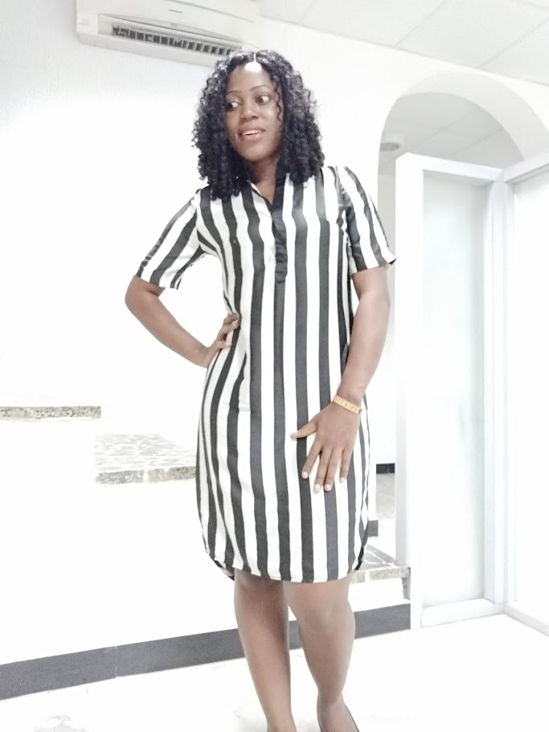
Daywear
A fitted floral dress is interrupted by a contrasting white panel across the bodice and sleeve. The asymmetric placement adds visual interest while preserving an elegant, wearable finish.
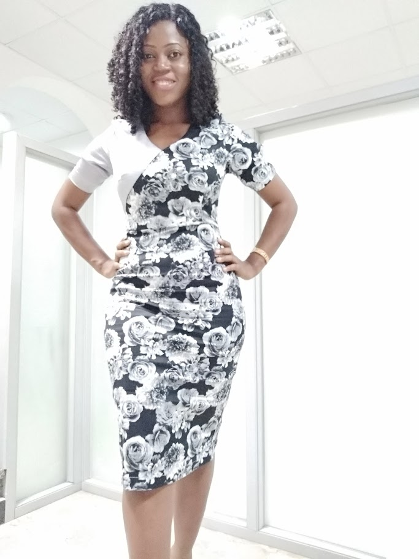
Ready-to-Wear
A fitted floral dress is interrupted by a contrasting white panel across the bodice and sleeve. The asymmetric placement adds visual interest while preserving an elegant, wearable finish.
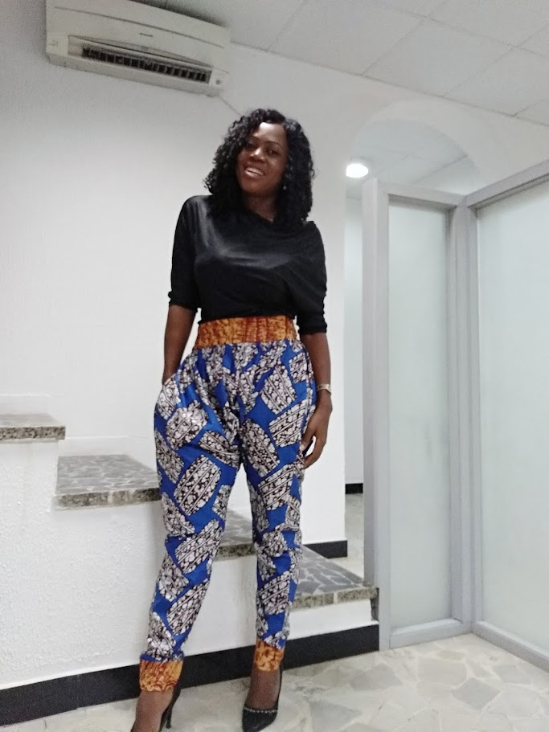
Separates
Wide-leg Ankara culottes combine a cropped length with generous movement and practical ease. The piece offers a relaxed alternative to fitted trousers while retaining a smart, structured appearance.
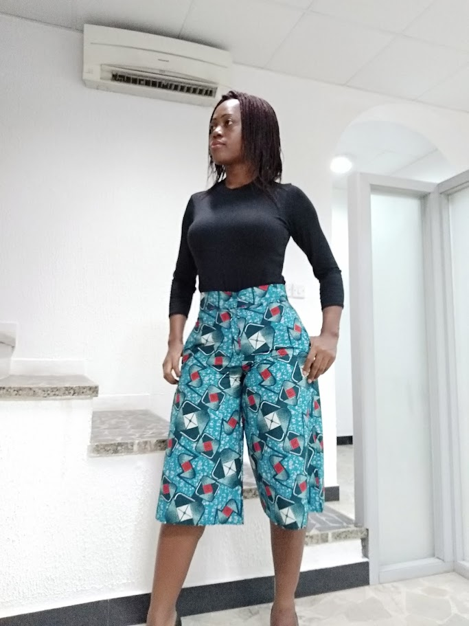
Contemporary Separates
Wide-leg Ankara culottes combine a cropped length with generous movement and practical ease. The piece offers a relaxed alternative to fitted trousers while retaining a smart, structured appearance.
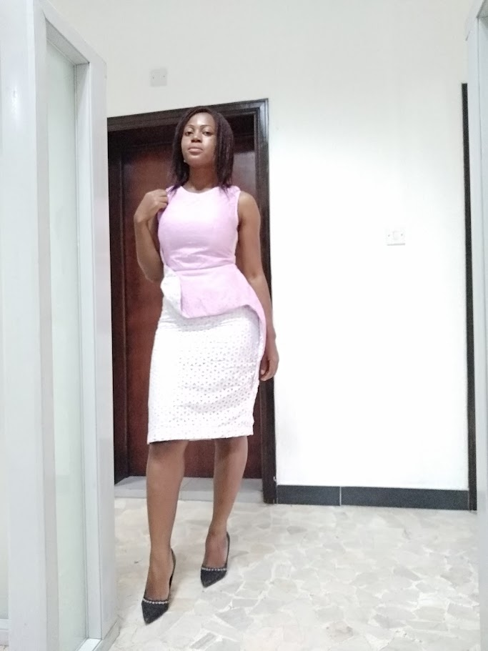
Occasionwear
A softly structured assymetric peplum dress. The contrasting palette and layered waist detail create a polished occasion look.